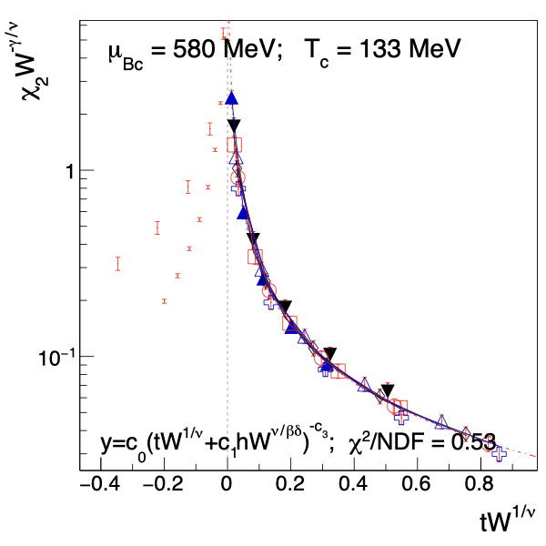
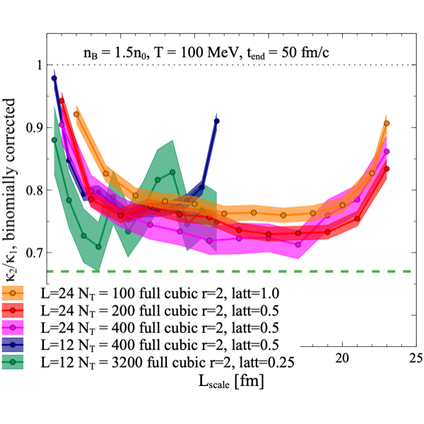
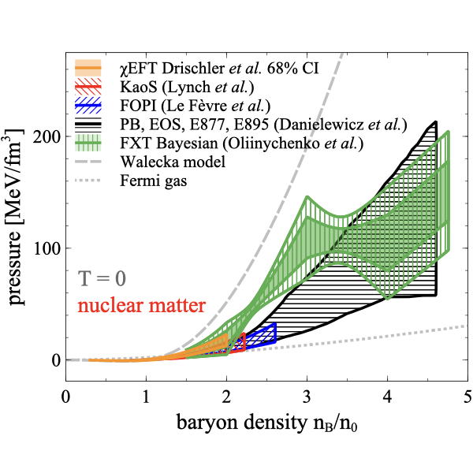

Agnieszka Sorensen, PhD
☰
About
Research
Service
Teaching
Resources for students
CV
Contact
You can find all my publications on
InspireHEP
.
Currently, I am working on the following projects:
Project 1.

Project 2.

My past projects include:
Past project 1.
